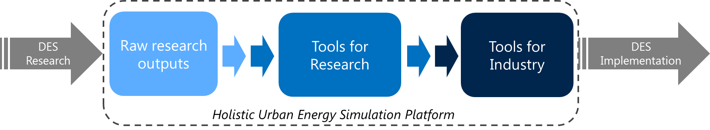

Widespread realization of distributed energy systems (DES) is essential to enhancing the sustainability and resilience of the energy supply infrastructure. This requires the development and deployment of advanced computational tools to support the intelligent design and control of DES.
We aim to develop an open source ecology of computational resources to support DES design and control. By bringing together diverse computational resources reflecting cutting-edge DES research, we aim to accelerate future research and facilitate the deployment of DES research in practice.
The purpose of the Holistic Urban Energy Simulation (HUES) Platform is:
1. To accelerate DES research by making existing models, data and code more accessible and understandable to researchers.
2. To improve DES design & control in practice by developing innovative, validated tools for practitioners.
We plan to achieve this by bringing together the raw outputs of computational research on DES, and gradually integrating and building these into useful tools for research and industry. All resources developed as part of the HUES Platform are released under open source licensing terms.
